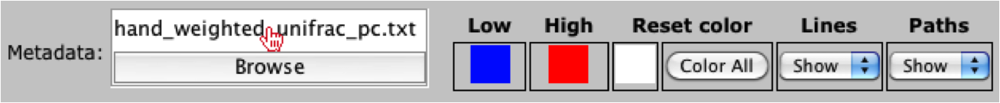

Loading SVG and Metadata¶
Open SVG image¶
When loading an SVG image, the user should select the “Open Image” option under the main menu.

Once selected the user will be prompted to choose and open an svg file.

Load and Process Metadata File¶
When loading a tab-delimited, the user should select the “Browse” button from the top-menu.

Once selected the user will be prompted to choose and open a file.

The user should notice that the filename is now listed above the “Browse” button.
Once loaded, the data will also be displayed in the right panel under the “Meta.” tab, where the ID’s and values are displayed. The user should also notice that they have the ability to sort the columns or “Color elements” by the categories listed in the drop-down menu.

Now that the metadata has been loaded, the user can paint the metadata onto the image by clicking the “Color elements” button under the “Meta.” tab in the right menu.